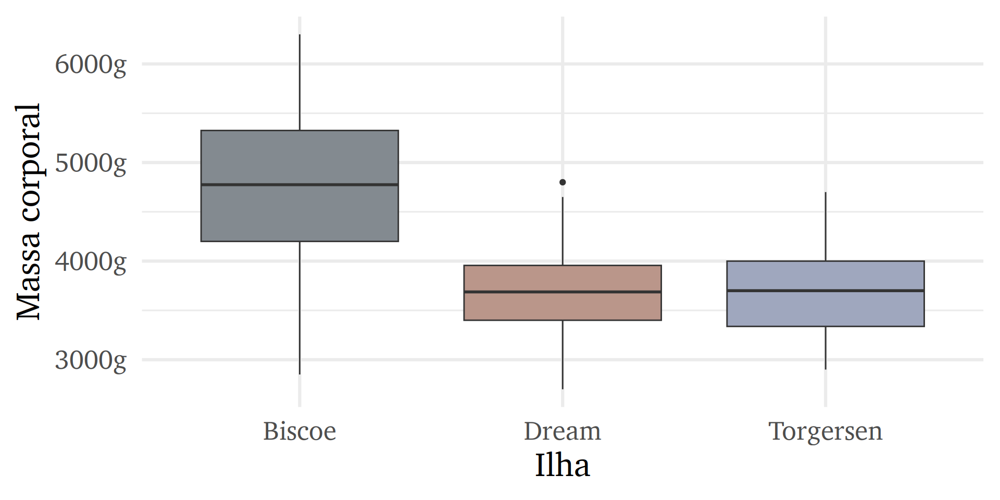
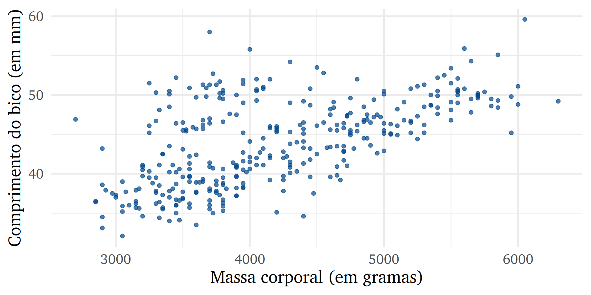

especie Biscoe Dream Torgersen
Pinguim-de-adélia 44 56 52
Pinguim-de-barbicha 0 68 0
Pinguim-gentoo 124 0 0Inferência estatística
Aula 5
Bruno Montezano
Grupo Alliance
Programa de Pós-Graduação em Psiquiatria e Ciências do Comportamento
Universidade Federal do Rio Grande do Sul
29 de maio de 2023
Conteúdo de hoje
- Introdução
- População e amostra
- Testes de hipótese
- Hipótese nula e alternativa
- Interpretação de resultados
- Teste \(\chi^2\)
- Teste t
- ANOVA de uma via e teste de Tukey
- Correlação
O que é estatística inferencial?
- Um dos principais objetivos ao fazer pesquisa é generalizar as descobertas para toda a população
- Amostra \(\rightarrow\) População
- Um modelo estatístico é uma representação de um fenômeno complexo que gerou os dados
- Por vezes, assume pressupostos sobre as variáveis
- Quando pesquisamos, estamos interessados em testar hipóteses
- Suposição sobre o estado das coisas
- Podem ser substantivas (formulação textual ou semântica) ou estatísticas (operacionalização da hipótese substantiva)
George Box sobre os modelos estatísticos
“All models are wrong, but some are useful” (Box 1976).
Hipóteses estatísticas
Hipótese nula (\(H_0\)): a mais conservadora, advoga pela ausência de padrões ou associações, em geral o pesquisador não acredita
Hipótese alternativa (\(H_a\)): apoia relação ou diferença entre as variáveis, comumente a hipótese que motivou o pesquisador a coletar seus dados
Em estatística frequentista, os testes testarão a adequação dos dados à hipótese nula
\[\underbrace{O \,grupo \,que \,tomou \,antidepressivo \,apresenta \,menos \,sintomas \,depressivos}_\text{Hipótese substantiva}\]
\[H_0: \mu_{tomou} = \mu_{não \,tomou}\] \[\underbrace{H_a: \mu_{tomou} < \mu_{não \,tomou}}_\text{Hipóteses estatísticas}\]
Vamos ver alguns testes estatísticos!
Teste qui-quadrado de independência
Usado para verificar se duas variáveis categóricas são independentes
Pressupostos:
- Os dados são aleatórios e representativos da população
- As variáveis analisadas são categóricas
Algumas hipóteses de pesquisa a serem respondidas pelo teste \(\chi^2\):
- Verificar se sexo e escolha do curso de graduação são independentes
- Testar se classe social e reprovação na escola são independentes
- Avaliar se obesidade e morte por COVID-19 são independentes
Exemplo de teste \(\chi^2\) no R
\(V\) de Cramer
Os \(p\)-valores quase nunca são informativos sobre a relevância dos resultados
O tamanho do efeito é uma medida objetiva e padronizada sobre um efeito observado
O tamanho do efeito mais utilizado no teste \(\chi^2\) é o \(V\) de Cramer
- Esta estatística gera valores entre 0 e 1
- A interpretação se baseia nos graus de liberdade
Teste t
Frequentemente usado para testar hipóteses sobre diferenças entre até duas médias
Pressupostos:
- Dados aleatórios e representativos da população
- Variável dependente contínua
- Resíduos do modelo são normalmente distribuídos
Exemplos de uso do teste t:
- Verificar se o peso médio dos bebês da maternidade do HCPA é similar ao esperado na população
- Verificar se as notas do ENEM diferem em estudantes da rede pública e privada de ensino
- Verificar se o uso de uma medicação diminuiu os sintomas ansiosos dos pacientes psiquiátricos após um mês
Exemplo de teste t de duas amostras
Vamos supor que queremos verificar se há diferença na massa corporal dos pinguins machos e fêmeas nos dados pinguins do pacote dados.
\[ H_0: \mu_{machos} - \mu_{fêmeas} = 0 \]
\[ H_a: \mu_{machos} - \mu_{fêmeas} \ne 0 \]
\[ \alpha = 0,05 \]
Teste t no R
pinguins |>
filter(!is.na(sexo)) |>
group_by(sexo) |>
summarise(
media_massa = mean(massa_corporal, na.rm = TRUE),
dp_massa = sd(massa_corporal, na.rm = TRUE)
)# A tibble: 2 × 3
sexo media_massa dp_massa
<fct> <dbl> <dbl>
1 fêmea 3862. 666.
2 macho 4546. 788.
Welch Two Sample t-test
data: massa_corporal by sexo
t = -8.5545, df = 323.9, p-value = 4.794e-16
alternative hypothesis: true difference in means between group fêmea and group macho is not equal to 0
95 percent confidence interval:
-840.5783 -526.2453
sample estimates:
mean in group fêmea mean in group macho
3862.273 4545.685 \(d\) de Cohen
O tamanho do efeito pode ser considerado um indicador da relevância clínica dos grupos
O \(d\) de Cohen é usado para calcular a distância entre as médias das distribuições sobrepostas
| \(d\) de Cohen | Interpretação |
|---|---|
| \(d < 0,2\) | Irrelevante |
| \(d \ge 0,2\) | Pequeno |
| \(d \ge 0,5\) | Moderado |
| \(d \ge 0,8\) | Grande |
ANOVA de uma via
- A ANOVA (análise da variância) representa um conjunto de procedimentos para verificar diferenças médias entre vários grupos
- Basicamente um super teste t
- Também pode ser entendido como um caso especial de um modelo de regressão
- Uma das análises mais usadas em Psicologia (Chartier e Faulkner 2008)
- Possíveis perguntas de pesquisa:
- Qual é a diferença de três medicamentos diferentes na redução dos sintomas de depressão em pacientes diagnosticados com transtorno depressivo maior?
- Há diferenças significativas nas medidas de ansiedade entre grupos de diferentes faixas etárias?
- Existe uma diferença nos níveis de estresse percebido entre pessoas que vivem em diferentes países?
Exemplo de ANOVA no R
Vamos novamente verificar a diferença na massa corporal, porém agora entre as ilhas do Arquipélago Palmer.

Visualmente, parece que os pinguins da ilha Biscoe apresentam uma média maior de massa_corporal em relação às outras ilhas.
Df Sum Sq Mean Sq F value Pr(>F)
ilha 2 86314512 43157256 110 <2e-16 ***
Residuals 339 132993186 392310
---
Signif. codes: 0 '***' 0.001 '**' 0.01 '*' 0.05 '.' 0.1 ' ' 1
2 observations deleted due to missingness Tukey multiple comparisons of means
95% family-wise confidence level
Fit: aov(formula = massa_corporal ~ ilha, data = pinguins)
$ilha
diff lwr upr p adj
Dream-Biscoe -1003.114738 -1177.9016 -828.3279 0.0000000
Torgersen-Biscoe -1009.645415 -1245.5391 -773.7518 0.0000000
Torgersen-Dream -6.530677 -251.8063 238.7450 0.9978364Correlação
Procedimento usado para verificar relação entre duas variáveis
Qual coeficiente escolher? Dica de leitura: Khamis (2008)
| Nível de medida | Correlação |
|---|---|
| Ambas variáveis são intervalares | Produto momento de Pearson |
| Ambas variáveis são ordinais | \(\rho\) de Spearman ou \(\tau\) de Kendall |
Na psicometria, correlações tetracóricas ou policóricas são muito comuns
Como interpretar?
- Varia de -1 a 1
| Valor | Sinal positivo (+) | Sinal negativo (-) |
|---|---|---|
| 0,1 | Fraca positiva | Fraca negativa |
| 0,3 | Moderada positiva | Moderada negativa |
| 0,5 | Forte positiva | Forte negativa |
Propriedades da correlação de Pearson
- Limitado entre -1 e 1, com 0 sendo a ausência de correlação
- O sinal indica a natureza, e o número, a força
- A correlação de uma variável com ela mesma é 1
- É simétrica, ou seja, \(r(x, y) = r(y, x)\)
- Adimensional e invariante em transformações lineares
- Sensível aos outliers
- Não indica causalidade
Exemplo de correlação em R

Pearson's product-moment correlation
data: pinguins$massa_corporal and pinguins$comprimento_bico
t = 13.654, df = 340, p-value < 2.2e-16
alternative hypothesis: true correlation is not equal to 0
95 percent confidence interval:
0.5220040 0.6595358
sample estimates:
cor
0.5951098 Parece que nós temos uma correlação forte e positiva entre massa corporal e comprimento do bico nos pinguins (r = 0,59; p<0,001).
Dica de um site divertido: Guess the Correlation
Alternativas não-paramétricas
Eventualmente, quando os pressupostos do modelo são violados, a literatura tradicional indica o uso de testes não-paramétricos com propostas semelhantes
Outros autores sugerem que sempre testes não-paramétricos sejam usados em resultados obtidos por processo de avaliação psicológica, com argumento de que os dados têm nível de medida ordinal
| Teste paramétrico | Teste não-paramétrico | Função no R |
|---|---|---|
| Teste t de duas amostras | Teste U de Mann-Whitney | wilcox.test() |
| ANOVA de uma via | Teste de Kruskal-Wallis | kruskal.test() |
Referências
Box, George E. P. 1976. “Science and Statistics”. J. Am. Stat. Assoc. 71 (356): 791–99. https://doi.org/10.1080/01621459.1976.10480949.
Chartier, Sylvain, e Andrew Faulkner. 2008. “General Linear Models: An Integrated Approach to Statistics”. Tutorials in Quantitative Methods for Psychology 4 (2): 65–78. https://doi.org/10.20982/tqmp.04.2.p065.
Khamis, Harry. 2008. “Measures of Association: How to Choose?” Journal of Diagnostic Medical Sonography 24 (3): 155–62. https://doi.org/10.1177/8756479308317006.
Tarefa de casa
A partir da base dos pinguins do pacote dados:
Calcule a correlação produto momento de Pearson entre o comprimento do bico e a profundidade do bico dos pinguins. Crie um gráfico de pontos (dispersão) com
ggplot2para acompanhar sua análise exploratória.Rode um teste t para verificar a diferença na média do comprimento da nadadeira entre os pinguins macho e fêmea. Usando as funções
group_by()esummarise()do pacotedplyr, faça um resumo da média e da mediana dos comprimentos das nadadeiras estratificando pelos grupos.- Lembre-se que a base
pinguinspossui onze valores ausentes (NA) na coluna dosexo.
- Lembre-se que a base
Crie um modelo de ANOVA de uma via para verificar se há diferenças na massa corporal dos pinguins baseado em sua espécie. Caso sim, rode um teste de Tukey para analisar quais grupos diferenciam entre si.